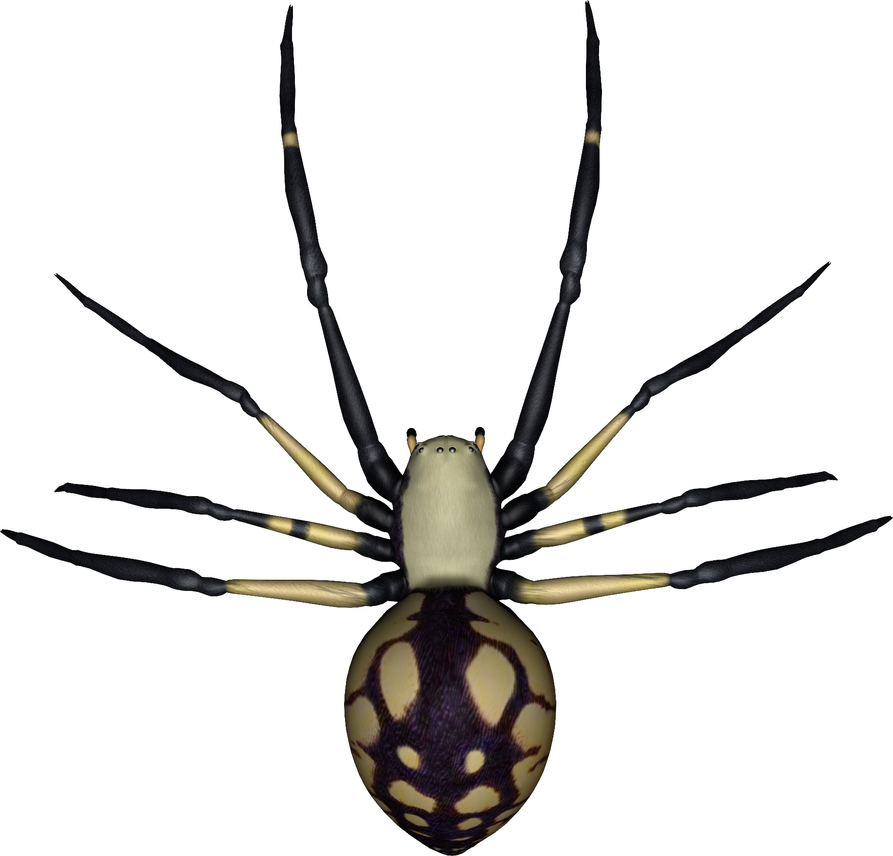

Maison Laurent-Vincken
Quatre questions
Une dernière épreuve avant de découvrir l’indice…
Répondez aux quatre questions ci-dessous. Lorsque vous avez terminé, appuyez sur le grand bouton pour vérifier toutes vos réponses.
Une dernière épreuve avant de découvrir l’indice…
La deuxième partie du code est accrochée au mur, en haut, du côté ouest.
